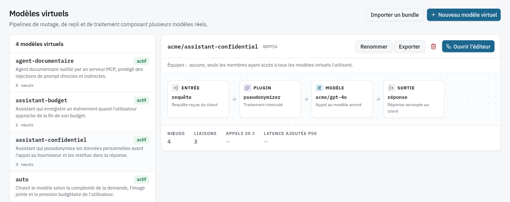
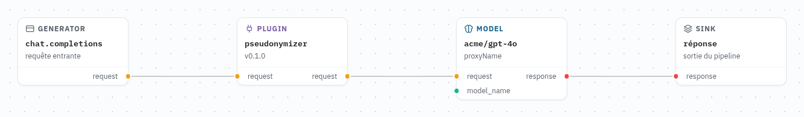
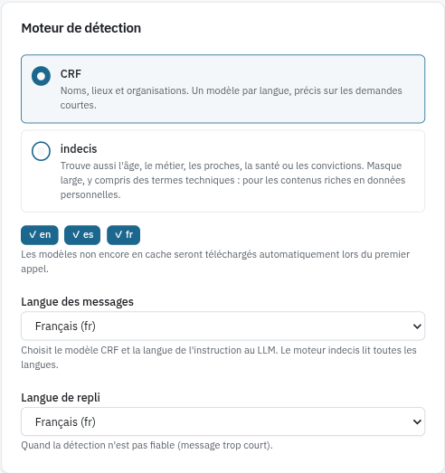
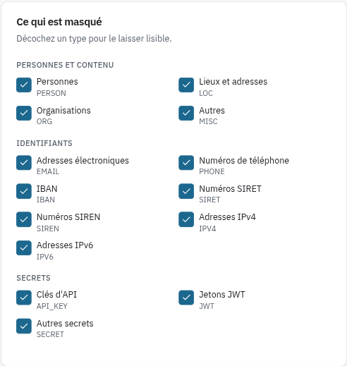
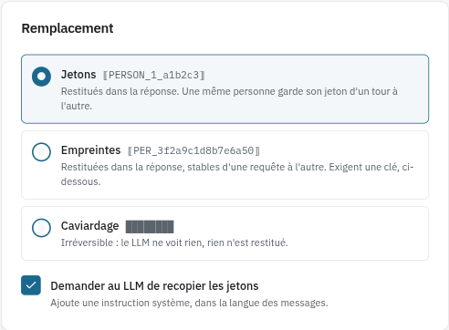
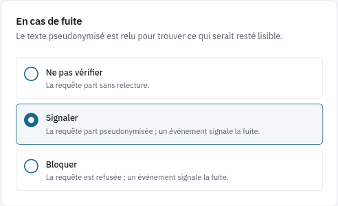
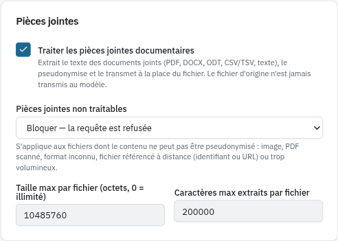
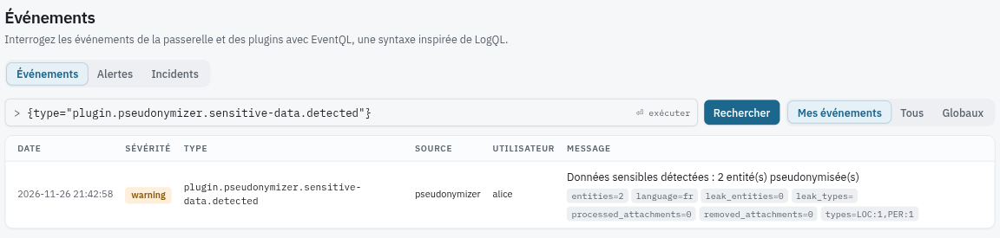

Guide : protéger les données personnelles¶
Ce guide construit un modèle virtuel acme/assistant-confidentiel qui remplace les données personnelles par des jetons avant l'appel au fournisseur, puis rétablit les valeurs d'origine dans la réponse. L'utilisateur écrit et lit des noms en clair ; le fournisseur ne voit que ⟦PERSON_1_a3f9c2⟧ ou ⟦LOCATION_1_a3f9c2⟧.
Le fichier assistant-confidentiel.bundle.json contient le résultat final : téléchargez-le, puis chargez-le avec le bouton Importer un bundle de la page Modèles virtuels. Vérifiez ensuite que le modèle appelé, acme/gpt-4o, existe dans votre organisation : l'import ne contrôle pas les noms de modèles, et un nom absent échoue à la première requête.

Prérequis¶
- Une organisation dont vous êtes administrateur, avec la permission d'écrire les modèles virtuels.
- Un fournisseur actif et un modèle déclaré dessus. Ce guide l'appelle
acme/gpt-4o. - Le plugin
pseudonymizerchargé sur le serveur. Il apparaît dans la palette de l'éditeur, section Plugins. Son modèle de reconnaissance d'entités se télécharge au premier appel : sur un serveur sans accès à Internet, voir le mode hors-ligne dans la référence du plugin.
La création d'un modèle virtuel et la prise en main de l'éditeur sont décrites dans Modèle virtuel.
Étape 1 : le modèle virtuel¶
Un modèle virtuel se présente aux clients comme un modèle ordinaire : ils l'appellent par son nom, sans rien changer à leur code. C'est ce qui permet d'imposer la pseudonymisation sans compter sur la discipline de chaque utilisateur : la protection se trouve sur le chemin de la requête, pas dans ses habitudes.
Dans Passerelle › Modèles virtuels, créez un modèle virtuel nommé assistant-confidentiel, puis ouvrez son éditeur. Il ne contient que les nœuds generator et sink.
Ajoutez le plugin pseudonymizer et le nœud intégré model, puis tracez le chemin de la requête : generator.request vers pseudonymizer.request, pseudonymizer.request vers model.request, model.response vers sink.response. Dans l'inspecteur du nœud model, choisissez acme/gpt-4o.

Le plugin est sur le chemin de la requête : il transforme les messages qui le traversent, et le modèle reçoit les messages pseudonymisés. Au retour, il restitue les valeurs d'origine dans la réponse, sans liaison supplémentaire.
Étape 2 : choisir le moteur¶
Avant de remplacer une donnée, il faut la trouver. Le moteur de détection décide de ce qui est reconnu comme personnel : trop timide, il laisse passer des noms ; trop zélé, il masque des mots dont le modèle a besoin pour répondre. Le bon choix dépend de ce que les utilisateurs enverront.
Sélectionnez le nœud pseudonymizer. Son écran de configuration s'ouvre dans le panneau de droite et suit l'ordre des décisions.
Sous Moteur de détection, deux choix :
| Moteur | Ce qu'il trouve | Quand le choisir |
|---|---|---|
| CRF | Personnes, lieux, organisations, avec un modèle par langue (français, anglais, espagnol) | Un assistant généraliste : il reste précis sur les demandes courtes et laisse lisibles les termes techniques |
| indecis | En plus : âge, métier, proches, santé, convictions, numéros de dossier, dates | Des contenus riches en données personnelles : comptes rendus, courriers, dossiers médicaux ou RH |
indecis masque large. Dans « Explique la différence entre TCP et UDP », il masque TCP et UDP, ce qui dégrade une réponse technique. Pour ce guide, gardez CRF. Le choix d'indecis et le réglage de sa prudence sont détaillés dans la référence du plugin.
Réglez Langue des messages sur Français. En détection automatique, la langue est déterminée à chaque requête ; la fixer évite qu'une demande courte, en franglais, soit lue avec le mauvais modèle.

Étape 3 : choisir ce qui est masqué¶
Tout masquer n'est pas toujours souhaitable : une donnée masquée est une information que le modèle ne peut plus utiliser. Cette étape règle, type par type, le compromis entre protection et utilité.
La section Ce qui est masqué liste chaque type de donnée avec sa case, en trois groupes :
- Personnes et contenu : personnes, lieux et adresses, organisations, et les autres types du moteur ;
- Identifiants : adresses électroniques, numéros de téléphone, IBAN, SIRET, SIREN, adresses IP ;
- Secrets : clés d'API, jetons JWT, autres secrets.
Décochez un type pour le laisser lisible. Un assistant de prise de rendez-vous peut par exemple garder les lieux en clair, pour que le modèle sache de quelle ville il parle, et masquer tout le reste.

Les secrets ne sont pas pseudonymisés mais caviardés : le marqueur ⟦…_REDACTED⟧ remplace la valeur, sans correspondance pour la restituer. Si un agent lit un fichier qui contient une clé puis le réécrit, le marqueur atterrit dans le fichier à la place de la clé. Décochez les secrets sur un modèle virtuel destiné à des agents qui modifient des fichiers de configuration.
Étape 4 : choisir le remplacement¶
Une fois la donnée trouvée, reste à décider ce qui la remplace. Ce choix détermine si l'utilisateur retrouvera la valeur d'origine dans la réponse, et si le modèle pourra suivre une même personne d'un message à l'autre.
Sous Remplacement :
| Choix | Ce que voit le fournisseur | Restitué dans la réponse |
|---|---|---|
| Jetons | ⟦PERSON_1_a3f9c2⟧, un numéro par personne, stable d'un tour à l'autre |
Oui |
| Empreintes | Une empreinte de la valeur, stable d'une requête à l'autre. Exige une clé HMAC, enregistrée dans les secrets du nœud | Oui |
| Caviardage | Rien : la valeur est retirée | Non |
Choisissez Jetons. Une même personne garde son jeton d'un tour à l'autre, si bien que le préfixe de la conversation ne change pas et que le cache de prompt du fournisseur continue de servir. Le suffixe du jeton est dérivé de l'organisation, de l'utilisateur et du nœud : il ne révèle rien au fournisseur que la clé d'API ne lui dise déjà.
Laissez cochée Demander au LLM de recopier les jetons : le plugin ajoute une consigne qui demande au modèle de recopier les jetons tels quels, faute de quoi il les reformule parfois et la restitution échoue.

Étape 5 : choisir la conduite en cas de fuite¶
Aucun moteur ne trouve tout : un nom rare ou une adresse mal orthographiée peuvent passer. La relecture après remplacement mesure ce qui a échappé ; cette étape décide de ce qu'on en fait : le savoir, ou l'empêcher.
Après remplacement, le plugin peut relire le texte pour trouver ce qui serait resté lisible. Sous En cas de fuite :
- Ne pas vérifier : la requête part sans relecture.
- Signaler : la requête part pseudonymisée, et un événement
plugin.pseudonymizer.sensitive-data.leaksignale ce qui a échappé au remplacement. - Bloquer : la requête est refusée, et le même événement le signale.
Commencez par Signaler. Les événements des premières semaines disent quels types échappent au moteur sur vos données réelles ; passez à Bloquer quand ils deviennent rares, ou d'emblée si une fuite est inacceptable pour ce modèle virtuel.

Étape 6 : les pièces jointes¶
Une donnée personnelle ne voyage pas toujours dans le texte : un contrat, un relevé ou une capture d'écran en contiennent autant. Sans règle pour les pièces jointes, le message serait protégé et le document joint partirait en clair.
Sous Pièces jointes, Traiter les pièces jointes documentaires extrait le texte des documents joints (PDF, DOCX, ODT, CSV, texte), le pseudonymise et le transmet à la place du fichier. Reste le cas des fichiers dont le contenu ne peut pas être pseudonymisé : une image, un PDF scanné, un format inconnu. Pièces jointes non traitables décide de leur sort :
- Bloquer refuse la requête ;
- Retirer écarte la pièce jointe et laisse passer la requête.
Gardez Bloquer : une capture d'écran qui montre un nom partirait sinon en clair, ou disparaîtrait sans que l'utilisateur comprenne pourquoi le modèle ne la voit pas.

Enregistrez la configuration du nœud, puis le pipeline. Le bandeau du bas indique Graphe valide.
Étape 7 : tester¶
Une configuration se vérifie sur une vraie requête : c'est le seul moyen de constater que le fournisseur ne voit que des jetons et que l'utilisateur retrouve ses noms. C'est aussi le moment de poser les alertes qui préviendront si la protection cesse un jour de fonctionner.
Avec un jeton d'API de l'organisation, envoyez une demande qui cite une personne et une ville :
curl -s http://localhost:3002/api/v1/chat/completions \
-H "Authorization: Bearer $XOLO_TOKEN" -H 'Content-Type: application/json' \
-d '{"model":"acme/assistant-confidentiel","messages":[{"role":"user","content":"Rédige un courriel de relance à Jean Dupont, notre client de Lyon, pour sa facture impayée."}]}'
La réponse parle de Jean Dupont et de Lyon : le plugin a restitué les noms. Le fournisseur, lui, a reçu ⟦PERSON_1_…⟧ et ⟦LOCATION_1_…⟧.
La page Événements de l'organisation le confirme. Chaque requête où quelque chose a été remplacé produit un événement plugin.pseudonymizer.sensitive-data.detected dont l'attribut types compte ce qui a été remplacé, par exemple LOC:1,PER:1. Une demande sans donnée personnelle part telle quelle, sans événement.

La restitution suppose que le modèle recopie les jetons tels quels, crochets compris. Faites cet essai avec le modèle que vous comptez utiliser, pas avec un autre : un petit modèle local les déforme. Essayé avec qwen2.5:3b sur Ollama, il a écrit [Prénom_PERSON_267830_3dbaa6] ou LOCATION_263704_3dbaa6 sans crochets, et même en caractères pleine chasse ; aucun de ces jetons n'a pu être restitué, et la réponse ne nommait ni Jean Dupont ni Lyon. Aucun événement ne signale ce cas : seule la lecture des réponses le révèle.
Deux alertes EventQL méritent d'être posées dès la mise en service :
| Requête | Ce qu'elle signale |
|---|---|
{type="plugin.pseudonymizer.sensitive-data.leak"} |
Une donnée a échappé au remplacement |
{type="plugin.pseudonymizer.passthrough"} |
Une requête est partie sans pseudonymisation : modèle de reconnaissance indisponible, configuration invalide, échec d'anonymisation |
La seconde est la plus importante : un serveur qui n'a pas pu télécharger son modèle laisse passer les requêtes en clair, et cet événement est le seul signe.
Ce qu'il faut savoir¶
- Le modèle doit savoir recopier les jetons. Voir l'étape 7 : un modèle qui les reformule rend une réponse où les personnes ne sont plus nommées.
- La réponse n'est plus streamée. Dès que le plugin a remplacé quelque chose, Xolo attend la fin de la réponse pour y restituer les valeurs avant de la renvoyer. Le client reçoit la réponse d'un bloc.
- Le prompt système de premier niveau de la route Messages n'est pas pseudonymisé. Il voyage dans le champ
systemde la requête, hors des messages que le pipeline traite. Un client qui y écrit un nom l'envoie en clair. - Un nœud qui appelle un modèle doit lire les messages pseudonymisés. Un
llm-classifierbranché surgenerator.requestenverrait les noms en clair au modèle qu'il interroge. Branchez-le sur la sortierequestdupseudonymizer. - Aucune correspondance n'est conservée au-delà de la requête. Les valeurs d'origine ne sont écrites nulle part : seul le message du client les porte, à chaque tour.
Pour aller plus loin¶
- Protéger tous les modèles d'un coup. Le même graphe, avec la case Passthrough cochée sur le nœud
model, devient un middleware qui s'applique à chaque modèle de l'organisation, sans que les clients changent de nom de modèle. - Un agent outillé. Le plugin restitue aussi les jetons dans les arguments des appels d'outils que le modèle émet. Le guide de l'agent outillé construit un tel agent.
- Tout le détail du plugin, formats d'outils, raisonnement étendu, mode strict, est dans sa référence.